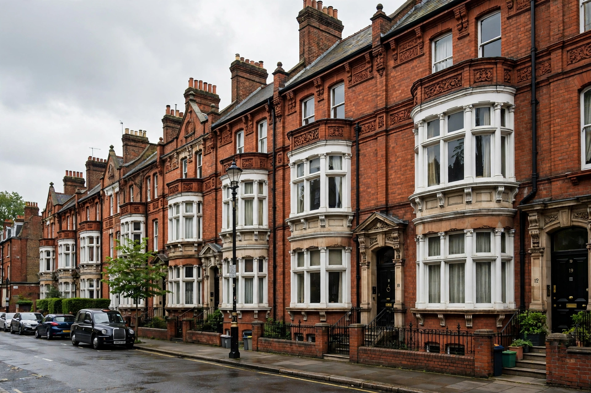

The Victorian Society is a British amenity society and charity founded in 1958 to campaign for the preservation of Victorian and Edwardian architecture and art. It is one of the national amenity societies whose views must be consulted on planning applications affecting listed buildings in England and Wales.

Victorian architecture of the kind the Society defends.
| The Victorian Society | |
| Founded | 1958 |
|---|---|
| Founders | John Betjeman and others |
| Type | Amenity society, registered charity |
| Focus | Victorian and Edwardian architecture (1837-1914) |
| Headquarters | 1 Priory Gardens, Bedford Park, London |
The Society was founded in 1958 at a time when Victorian architecture was widely despised and being demolished at an alarming rate. The poet John Betjeman was a founding figure and its most famous advocate; the architectural historian Nikolaus Pevsner was an early chairman. The demolition of the Euston Arch in 1961-62, which the Society failed to prevent, became a galvanising symbol of the conservation movement.
The Society campaigns nationally and through regional groups, publishes the journal The Victorian and an annual list of the Top Ten Endangered Victorian and Edwardian Buildings. It is a statutory consultee on applications to demolish or alter listed buildings of its period and works alongside bodies such as Historic England and the National Trust. Landmark buildings it helped save include St Pancras station and the Midland Grand Hotel in London.
The Society concerns itself with buildings and designed landscapes dating from 1837 to 1914 - the reign of Queen Victoria and the Edwardian years - spanning Gothic Revival churches, industrial structures, town halls, pubs, terraces and suburbs.